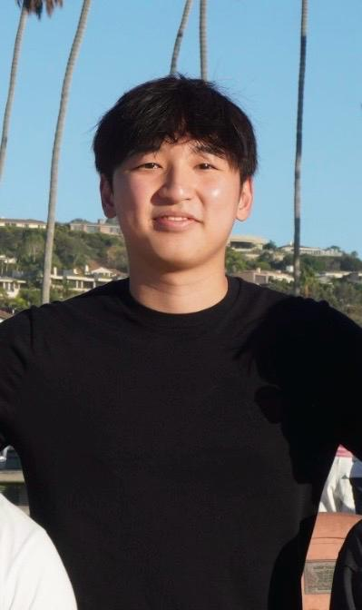

University of California, San Diego
Degree: B.S. in Computer Science
Expected Graduation: May 2027

Hi! I'm Matthew, a Computer Science student at UC San Diego, graduating in 2027.
I've always been interested in technology and how things work behind the scenes. I enjoy programming, working on projects, and figuring out different ways to solve problems.
I've also had the chance to gain some experience through internships at Blibli and Lawson, where I worked on software engineering and data analysis.
Recently, I've been getting more into web development and learning how to build websites using HTML and other web technologies.
Degree: B.S. in Computer Science
Expected Graduation: May 2027
Some of the areas I'm interested in include:
I also enjoy working on projects where I get to apply what I've learned in class.
I'm hoping to continue improving my programming skills and gain more hands-on experience in software engineering. I want to work on projects that are useful and challenge me to learn new things.
You can read more about my internships and other experiences on my Experience page.
Current Focus: Software Engineering and Web Development
Current Project: My personal portfolio website for CSE 134B.
One of the things I've been learning in this class is semantic markup, which is basically using HTML tags that describe what the content actually means.
School:
University of California, San Diego
San Diego, California